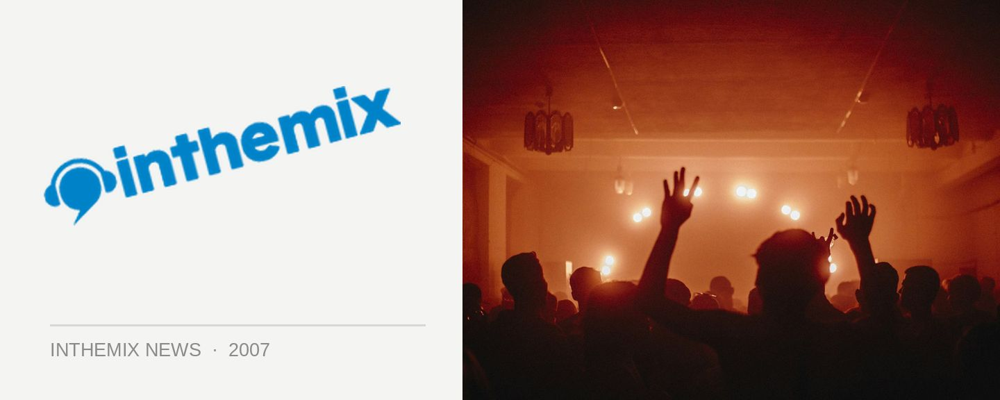

Good Vibrations festival shifts to Brisbane!
Good Vibrations organisers Jam were left in a bit of a pickle this week when the Gold Coast Council decided to restrict the number of music festivals at Doug Jennings Park, but they’ve responded by shifting the party back to Brisbane’s Riverstage venue in the City Gardens. So Queensland music lovers won’t be left out after all!
Which is a good thing, because it’s probably the festival’s biggest and best lineup yet – featuring the likes of Cypress Hill, Calvin Harris, The Rapture, Thievery Corporation, James Zabiela, Pharoahe Monch and many more. It’s sure to be one of the summer’s big ticket events!
It all takes place at Brisbane’s Riverstage in the City Gardens on Sunday 10th February. Click here to check out ITM’s full coverage page!